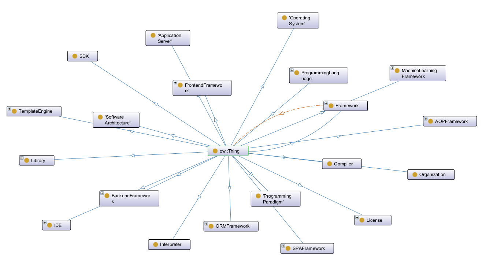
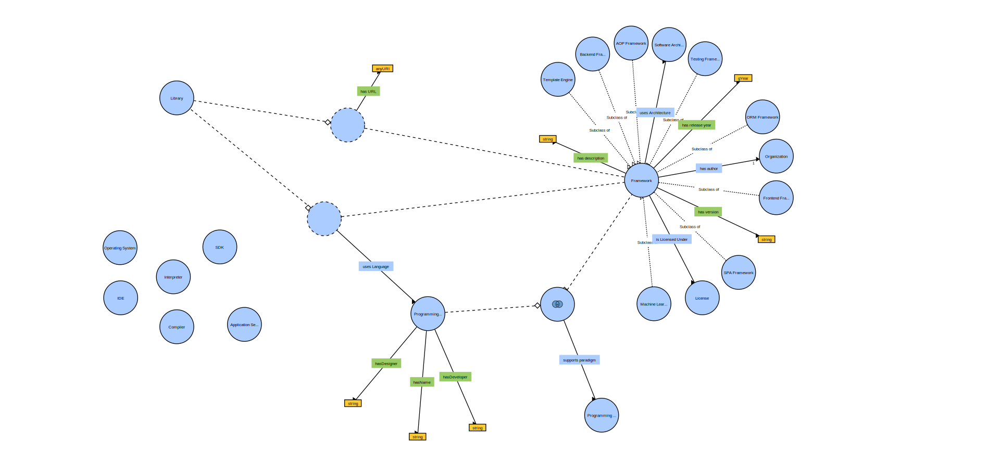
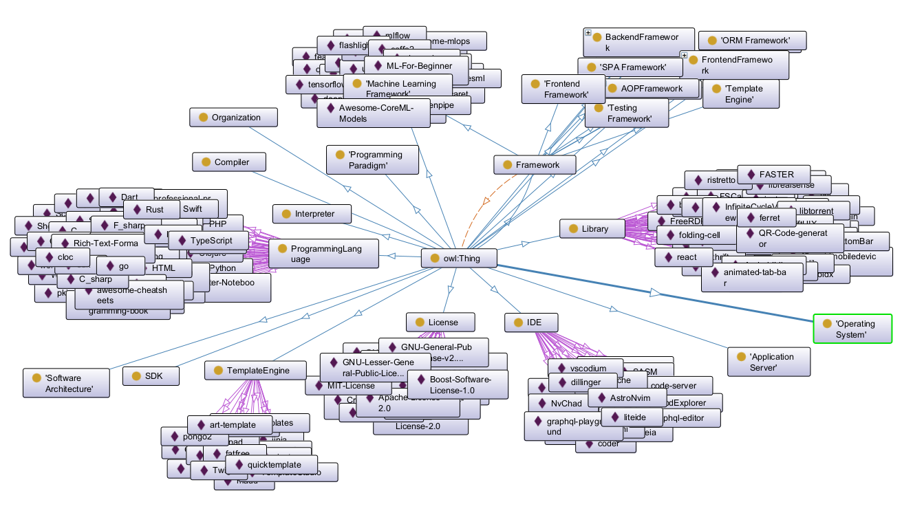
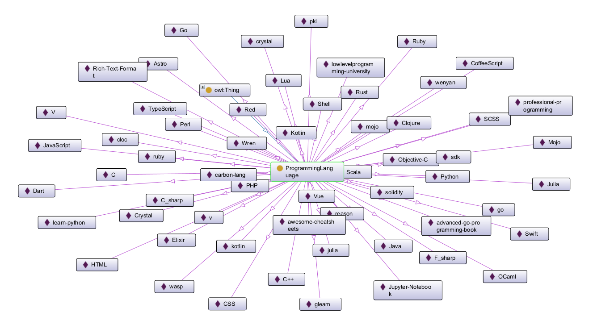

Scholarly HTML
Abstract
The WADO App is a web application that leverages the Semantic Web and ontologies to provide a structured and interactive platform for exploring programming languages, frameworks, and related topics. This documentation offers a comprehensive overview of the application's architecture, components, and functionalities.
Introduction
Welcome to the documentation of the WADO App, a web application designed to highlight the capabilities of the Semantic Web and demonstrate the power of ontologies in web development. The application provides users with a platform to explore programming languages, frameworks, and related topics in a structured and interactive manner.
This documentation is structured to provide a clear and detailed overview of the application's architecture, including diagrams and descriptions of the main components and their interactions. Whether you are a developer looking to understand the technical details or a user interested in the application's capabilities, this documentation will provide you with the necessary information.
Architecture of the Web Application
In the next section we will describe an overview of the application, highlighting the architecture of the WADO App, detailing its key components and their interactions. The application follows a client-server model, where the frontend communicates with the backend via a REST API. This architectural design ensures scalability, as the server can be asynchronously deployed on multiple instances to handle more requests, maintainability, as the separation of concerns allows for easier updates and debugging, and flexibility, allowing seamless integration with cloud deployment and further enhancements. Additionally, it ensures performance, as the load can be balanced across multiple servers, and security, as the backend can be protected behind firewalls and other security measures.
The architecture consists of three main components:
- Frontend Component - A modular, component-based structure, developed using Angular Framework, that handles user interactions and displays data fetched from the backend. It includes multiple pages such as authentication, data visualization, and SPARQL query execution.
- Backend Component - A RESTful API that is responsible for processing user requests, querying the RDF dataset, and returning structured responses in JSON format. Authentication and access control mechanisms ensure secure data handling while the API is developed using Flask Framework. The backend is responsible for processing user requests, querying the RDF dataset, and returning structured responses in JSON format.
- OWL Ontology - A RDF dataset that allows efficient querying and retrieval of data. The dataset is queried using SPARQL, a query language for RDF datasets. The ontology is in OWL format and provides a rich and structured representation of the data models to provide comprehensive information for web development, including programming languages, frameworks, licenses, and other related topics. To populate the ontology we retrived data from the GitHub GraphQL API and the DBpedia SPARQL API to ensure a rich and diverse dataset.
- Database - A PostgreSQL database is used to store user data securely. It is deployed on a separate server to ensure data integrity, security, and performance. The database handles user authentication, authorization, and stores user-related information like email and password. The database is accessed by the backend to store and retrieve user data.
General Diagram

This diagram illustrates the overall architecture of the application, showing the interaction between the frontend, backend, the database and the ontology, and how user requests are processed, and how data flows through the system. It highlights how the user interacts with our responsive UI which ensures a seamless user experience. User requests are sent to the backend to be processed via our two APIs: the Auth API and the Ontology API. The Auth API handles user authentication and authorization, ensuring secure access to the application while interacting with the database. The Ontology API queries the RDF dataset to retrieve relevant information based on user requests.
C4 Diagram of the Application
Next, we created the C4 Diagram of the Application, which provides a more detailed view of the application's architecture, showing the interaction between the frontend, backend, the database, and the ontology, and how user requests are processed and data flows through the system. The C4 Diagram is divided into three levels, each providing a different level of detail about the application's architecture. The first level provides an overview of the application's architecture, showing the main components and their interactions.
C4 Diagram of the Application - Level 1

C4 Diagram of the Application - Level 2

C4 Diagram of the Application - Level 3

Frontend Component
🎨 Color Palette
| Name | Hex Code |
|---|---|
| Primary Color | #222831 |
| Secondary Color | #393E46 |
| Nav Bar Color | #006E49 |
| Accent Color | #00ADB5 |
| Text Color | #EEEEEE |
| Background Color | #F0F0F0 |
The frontend is designed to be intuitive and user-friendly, making it easy for users to navigate through the application and access the features they need. The frontend communicates with the backend via two RESTful APIs to fetch data and update the UI dynamically. Regarding the data flow, the frontend sends requests to the backend, which processes the data and responds with relevant information. The frontend then dynamically updates the UI based on the received data. This ensures that the user interface is always up-to-date and responsive to user interactions.
Used Technologies
The frontend is developed using Angular Framework, a popular frontend framework that provides a modular and component-based structure for building scalable web applications. The UI components are modular and reusable, allowing for easy customization and maintenance. The UI includes components for user authentication, data visualization and querying. The frontend communicates with the backend via two RESTful APIs to fetch data and update the UI dynamically, all of this being made by using the Angular HTTPClient module to send requests to the backend and receive responses. For development we used version 19.1.4 of Angular.
For styling the UI components we used Bulma CSS framework, which provides a clean and modern look to the application. The UI components are designed to be responsive and accessible, ensuring a seamless user experience across different devices and screen sizes. To have the lastest features available in Bulma Framework we used the version 1.0.3.
UI Components
The UI includes components for exposing the functionalities of both APIs provided by the backend: the Auth API and the Ontology API. The Auth API components include user authentication page and user registration page, while the Ontology API components include SPARQL query execution page, framework data visualization page, a page for visualizing instances for each class available in the ontology, and a page for visualizing the properties of an instance available in the ontology. Besides these pages, the UI also includes a home page and a navigation bar for easy access to the different sections of the application.
Navigation Bar Component

The navigation bar is a component that is present on all pages of the application. It provides users with easy access to the different sections of the application, including the home page, authentication pages, and ontology pages. The navigation bar is responsive and adapts to different screen sizes to ensure a consistent user experience. When the screen size is reduced, the navigation bar collapses into a hamburger menu.
Welcome Page

The welcome page is the first page users see when they access the application. This page provides users with an overview of the application and its capabilities. It includes a welcoming message and buttons to access all the functionalities of the application. The page can be access by clicking on the Wado Application logo in the navigation bar.
Register Page

The "Register" page allows users to create an account by providing their email and password. The page includes input fields for email and password, as well as a button to submit the registration form. The email field is validated to ensure it is in the correct format, and the password field is validated to ensure it meets the required criteria. The page can be access from the welcome page by clicking on the "Register" button or from the login page by clicking on the "Register here" link.
Login Page
The "Login" page allows users to authenticate themselves by providing their email and password. The page includes input fields for email and password, as well as a button to submit the login form. The page can be access from the welcome page by clicking on the "Login" button or from the navigation bar by clicking on the "Login" button. Also, when accessing a page that requires authentication, the user is redirected to the login page if he is not logged in already.
Concept Page
The "Concept" page allows users to view the properties of a resource by providing its URI. The page includes an input field for the URI and a button to submit the form. The page can be access from the navigation bar by clicking on the "Concept Page" button. After submitting the form, the page displays the properties of the resource, including the concept URI and its properties. The user can click on the concept URI to view more details about the resource. Also, the user can access this page without being logged in.
One Concept Page
The "One Concept" page allows users to view the properties of a resource. The page can be access by clicking on the concept URI everywhere in the application. The page displays the properties of the resource, including the concept URI and its properties. The user can click again on the concept URI from the page and will be redirected to the details of the clicked resource inside the same page. Also, the user can access this page without being logged in.
Frameworks Page
The "Framework" page allows users to view the frameworks that used a specified programming language. The page can be access by clicking on the "Frameworks" button from the navigation bar. Initially, the page displays a list of all programming languages available in the ontology. For more details, the user can access the "Concept" page of each programming language by clicking its name from the list. The user can select a language from the list and after clicking the "Submit" button he will view all the frameworks from the ontology that use that language. Also, the user can access this page without being logged in.
Instances of a Class Page
The "Instances" page allows users to view all the instances of a specified class from the ontology. The page can be access by clicking on the "Instances" button from the navigation bar and the user can access this page without being logged in. Initially, the page displays a list of all classes available in the ontology. For more details, the user can access the "Concept" page of each class by clicking its name from the list. The user can select a class from the list and after clicking the "Submit" button he will view all the instances from the ontology that are of that class.
SPARQL Query Page
The "SPARQL Query" page allows users to execute SPARQL queries on the ontology. The page can be access by clicking on the "SPARQL" button from the navigation bar and the user must be logged in to access this page. The user can write a SPARQL query in the input field and after clicking the "Submit" button he will view the results of the query. The query must respect the SPARQL syntax, meaning the requested data must be selected in a triplette pair of object, property and value. To simplify, the query must begin with the following structure:
SELECT ?object ?property ?value
WHERE {
?object ?property ?value .
# rest of the query
}
The results are displayed in a
three-columns table format, showing the objects, their properties and their
values.
Also, the user can retrive the result of the query in a JSON format in an email by clicking the "Send Email" button. The user must provide a valid email address at the register step and this is the reason why the user must be logged in to access this page.
Backend Component
Used Technologies
The backend is developed using Flask Framework, a lightweight and flexible framework for building web applications. Flask provides a simple and extensible structure for developing RESTful APIs, making it ideal for building scalable and maintainable web applications. The backend is responsible for processing user requests, querying the RDF dataset, and returning structured responses in JSON format. The backend is developed using Flask Framework, version 3.1.0. The backend uses Flask-Cors to handle Cross-Origin Resource Sharing (CORS) requests, allowing the frontend to communicate with the backend securely. The backend uses Flask-JWT-Extended for user authentication and authorization, ensuring secure access to the application. The backend uses Flask-RESTful to create RESTful APIs, making it easy to define routes and handle user requests. The backend uses Flask-SQLAlchemy to interact with the PostgreSQL database, ensuring secure data handling and efficient data retrieval. The backend uses PyJWT for JSON Web Token (JWT) handling, ensuring secure user authentication and authorization. The backend uses rdflib to interact with the RDF dataset, ensuring efficient querying and retrieval of data.
RESTful APIs
The backend provides two RESTful APIs: the Auth API and the Ontology API. The Auth API is responsible for user authentication and authorization, while the Ontology API is responsible for querying the RDF dataset and returning structured responses in JSON format. The APIs are designed to be extensible, allowing for easy addition of new routes and functionalities as needed.
Auth API
The Auth API provides endpoints for user authentication and authorization. The API includes routes for user registration, user login, and user logout. The API uses JWT tokens for secure user authentication and authorization, ensuring that only authenticated users can access the application. The API is designed to be secure and efficient, ensuring that user data is handled safely and securely. The Auth API includes the following routes:
- /auth/register : A POST route for user registration, allowing users to create a new account by providing their email and password. The route returns a success message if the user is registered successfully, or an error message if the user already exists or the input is invalid.
- /auth/login : A POST route for user login, allowing users to authenticate themselves by providing their email and password. The route returns a JWT token if the user is authenticated successfully, or an error message if the user is not found or the password is incorrect.
Ontology API
The Ontology API provides endpoints for querying the RDF dataset and returning structured responses in JSON format. The API includes routes for executing SPARQL queries, retrieving data for a specific concept, retrieving instances of a specific class, and retrieving properties of a specific instance. The API is designed to be efficient and scalable, ensuring that data can be retrieved quickly and accurately. The Ontology API includes the following routes:
- /ontology/class/{class_uri}/instances : A GET route for retrieving instances of a specific class from the RDF dataset. The route takes the class URI as a parameter and returns a list of instances for that class.
- /ontology/frameworks : A GET route for retrieving frameworks for a programming language from the RDF dataset. The route takes the language as a parameter and returns a list of frameworks that use that language.
- /ontology/classes : A GET route for retrieving all available classes from the RDF dataset. The route returns a list of classes available in the dataset.
- /ontology/languages : A GET route for retrieving all available programming languages from the RDF dataset. The route returns a list of programming languages available in the dataset.
- /ontology/concept : A GET route for retrieving information about one concept. The route takes the concept URI as a parameter and returns detailed information about the concept.
- /ontology/sparql : A POST route for executing a SPARQL query on the RDF dataset. The route takes a JSON object with the query as a parameter and returns the results of the query. The route is designed to be flexible, allowing users to execute complex queries and retrieve specific data from the dataset. The route is secured with JWT tokens, ensuring that only authenticated users can access it. The route also includes an option to send the query results to the user's email address, providing a convenient way to retrieve and store query results.
GitHub
Inside this project, Github Application was used for version control and collaborative work between the team members. The source code of the application can be found on WADO Repository, which is a public repository, so anyone can access it and see the code. The code is divided into multiple folders, each folder containing a specific part of the application. The main folders are:
- backend - contains the code for the backend of the application
- frontend - contains the code for the frontend of the application
- ontology_scripts - contains the code for the ontology of the application
- openapi_spec - contains the code for the openapi specification of the application
- scholarly - contains the code for the scholarly documentation of the application
Ontology of the Application
The ontology of the application is a RDF dataset that allows efficient querying and retrieval of data. The dataset is queried using SPARQL, a query language for RDF datasets. The ontology is in OWL format and provides a rich and structured representation of the data models to provide comprehensive information for web development, including programming languages, frameworks, licenses, and other related topics. To populate the ontology we retrived data from the GitHub GraphQL API and the DBpedia SPARQL API to ensure a rich and diverse dataset.
Taxology of the Ontology
The ontology is structured in a hierarchical manner, with classes representing different concepts and instances representing specific entities. The classes are organized based on their relationships and properties, allowing for efficient querying and retrieval of data. The ontology is designed to be extensible, allowing for easy addition of new classes and instances as needed. The ontology includes classes for:
- ProgrammingLanguage - A class representing a programming language, with properties for type (rdf:type), name (hasName), developer (hasDeveloper), designer (hasDesigner), supported paradigm (ns1:supportsParadigm), label (rdfs:label), description (ns1:hasDescription), url (ns1:hasURL), released year (ns1:hasReleaseYear), license (ns1:isLicenseUnder).
- ProgrammingParadigm - A class representing a programming paradigm, with properties for type (rdf:type), label (rdfs:label), description (ns1:hasDescription), url (ns1:hasURL), released year (ns1:hasReleaseYear), license (ns1:isLicenseUnder), used programming language (ns1:usesLanguage).
- SoftwareArchitecture - A class representing a software architecture, with properties for type (rdf:type), label (rdfs:label), description (ns1:hasDescription), url (ns1:hasURL), released year (ns1:hasReleaseYear), license (ns1:isLicenseUnder), used programming language (ns1:usesLanguage).
- License - A class representing a software license, with properties for type (rdf:type), label (rdfs:label), description (ns1:hasDescription), url (ns1:hasURL), released year (ns1:hasReleaseYear),
- OperatingSystem - A class representing an operating system, with properties for type (rdf:type), label (rdfs:label), description (ns1:hasDescription), url (ns1:hasURL), released year (ns1:hasReleaseYear), license (ns1:isLicenseUnder), used programming language (ns1:usesLanguage).
- Compiler - A class representing a compiler, with properties for type (rdf:type), label (rdfs:label), description (ns1:hasDescription), url (ns1:hasURL), released year (ns1:hasReleaseYear), license (ns1:isLicenseUnder), used programming language (ns1:usesLanguage).
- Interpreter - A class representing an interpreter, with properties for type (rdf:type), label (rdfs:label), description (ns1:hasDescription), url (ns1:hasURL), released year (ns1:hasReleaseYear), license (ns1:isLicenseUnder), used programming language (ns1:usesLanguage).
- ApplicationServer - A class representing an Application Server, with properties for type (rdf:type), label (rdfs:label), description (ns1:hasDescription), url (ns1:hasURL), released year (ns1:hasReleaseYear), license (ns1:isLicenseUnder), used programming language (ns1:usesLanguage).
- Framework - A class representing a framework, with properties for type (rdf:type), label (rdfs:label), description (ns1:hasDescription), author (rdfs:hasAuthor), used architecture (ns1:usesArchitecture), url (ns1:hasURL), released year (ns1:hasReleaseYear), supported paradigm (ns1:supportsParadigm), license (ns1:isLicenseUnder), used programming language (ns1:usesLanguage).
- ORMFramework - A class representing an ORM framework, with properties for type (rdf:type), label (rdfs:label), description (ns1:hasDescription), author (rdfs:hasAuthor), used architecture (ns1:usesArchitecture), url (ns1:hasURL), released year (ns1:hasReleaseYear), parent class (rdfs:subClassOf), license (ns1:isLicenseUnder), supported paradigm (ns1:supportsParadigm), used programming language (ns1:usesLanguage).
- SPAFramework - A class representing a SPA framework, with properties for type (rdf:type), label (rdfs:label), description (ns1:hasDescription), author (rdfs:hasAuthor), used architecture (ns1:usesArchitecture), url (ns1:hasURL), released year (ns1:hasReleaseYear), parent class (rdfs:subClassOf), license (ns1:isLicenseUnder), supported paradigm (ns1:supportsParadigm), used programming language (ns1:usesLanguage).
- FrontendFramework - A class representing a Frontend framework, with properties for type (rdf:type), label (rdfs:label), description (ns1:hasDescription), author (rdfs:hasAuthor), used architecture (ns1:usesArchitecture), url (ns1:hasURL), released year (ns1:hasReleaseYear), parent class (rdfs:subClassOf), license (ns1:isLicenseUnder), supported paradigm (ns1:supportsParadigm), used programming language (ns1:usesLanguage).
- BackendFramework - A class representing a Backend framework, with properties for type (rdf:type), label (rdfs:label), description (ns1:hasDescription), author (rdfs:hasAuthor), used architecture (ns1:usesArchitecture), url (ns1:hasURL), released year (ns1:hasReleaseYear), parent class (rdfs:subClassOf), license (ns1:isLicenseUnder), supported paradigm (ns1:supportsParadigm), used programming language (ns1:usesLanguage).
- TemplateEngine - A class representing a Template Engine framework, with properties for type (rdf:type), label (rdfs:label), description (ns1:hasDescription), author (rdfs:hasAuthor), used architecture (ns1:usesArchitecture), url (ns1:hasURL), released year (ns1:hasReleaseYear), parent class (rdfs:subClassOf), license (ns1:isLicenseUnder), supported paradigm (ns1:supportsParadigm), used programming language (ns1:usesLanguage).
- MachineLearningEngine - A class representing a Machine Learning framework, with properties for type (rdf:type), label (rdfs:label), description (ns1:hasDescription), author (rdfs:hasAuthor), used architecture (ns1:usesArchitecture), url (ns1:hasURL), released year (ns1:hasReleaseYear), parent class (rdfs:subClassOf), license (ns1:isLicenseUnder), supported paradigm (ns1:supportsParadigm), used programming language (ns1:usesLanguage).
- TestingEngine - A class representing a Testing framework, with properties for type (rdf:type), label (rdfs:label), description (ns1:hasDescription), author (rdfs:hasAuthor), used architecture (ns1:usesArchitecture), url (ns1:hasURL), released year (ns1:hasReleaseYear), parent class (rdfs:subClassOf), license (ns1:isLicenseUnder), supported paradigm (ns1:supportsParadigm), used programming language (ns1:usesLanguage).
- AOPEngine - A class representing a AOP framework, with properties for type (rdf:type), label (rdfs:label), description (ns1:hasDescription), author (rdfs:hasAuthor), used architecture (ns1:usesArchitecture), url (ns1:hasURL), released year (ns1:hasReleaseYear), parent class (rdfs:subClassOf), license (ns1:isLicenseUnder), supported paradigm (ns1:supportsParadigm), used programming language (ns1:usesLanguage).
- SDK - A class representing a SDK, with properties for type (rdf:type), label (rdfs:label), description (ns1:hasDescription), url (ns1:hasURL), released year (ns1:hasReleaseYear), license (ns1:isLicenseUnder), used programming language (ns1:usesLanguage).
- Library - A class representing a Library, with properties for type (rdf:type), label (rdfs:label), description (ns1:hasDescription), url (ns1:hasURL), released year (ns1:hasReleaseYear), license (ns1:isLicenseUnder), used programming language (ns1:usesLanguage).
- IDE - A class representing a IDE, with properties for type (rdf:type), label (rdfs:label), description (ns1:hasDescription), url (ns1:hasURL), released year (ns1:hasReleaseYear), license (ns1:isLicenseUnder), used programming language (ns1:usesLanguage).
- Organization - A class representing a Organization, with properties for type (rdf:type), label (rdfs:label), description (ns1:hasDescription), url (ns1:hasURL), released year (ns1:hasReleaseYear), license (ns1:isLicenseUnder), used programming language (ns1:usesLanguage).
Ontology Graph - Protege
Ontology Graph - WebVowl
Populating the Ontology
To populate the ontology, we retrieved data from the GitHub GraphQL API and the DBpedia SPARQL API. The GitHub GraphQL API provides information about programming languages and useful metadata such as description, url, creation year, and license. The DBpedia SPARQL API provides information about software frameworks, including their authors, release date and license. The data was transformed into RDF/XML format. To obtain a rich and diverse dataset, we retrieved data from multiple sources and combined it into a single ontology.
To obtain a consistent and full ontology, we mapped existent data from both APIs to our classes and properties, by searching for classes names as tags in the GitHub API. At the end, we mapped the tag, which was our class, with the found object from the API via an existing property. The same process was done for the DBpedia API, but in this case, we searched for the framework name in the API and mapped it to our class.
The ontology was then imported into the RDF database and queried using SPARQL to retrieve relevant information based on user requests. As a 'in progress' state, the output from running the GraphQL GitHub API is present in the following file: running_of_github_api_script.txt.
Final Ontology
The final ontology was created by combining the data from both APIs and ensuring that the classes and properties are consistent and well-defined. The ontology provides a rich and structured representation of the data models, allowing for efficient querying and retrieval of data. The final ontology is available in the following file: ontology.owl. And for exemplification purposes, we provide a sample of the ontology below using the Protege Application:
Final Ontology - With instances for some classes
Final Ontology - Instances for Programming Language class
Interesting Queries
To demonstrate the capabilities of the ontology, we provide some interesting queries that can be executed using SPARQL. These queries allow users to retrieve specific information from the ontology based on their requirements. The queries are designed to showcase the flexibility and power of the ontology in querying and retrieving data.
Query 1 - Retrieve all properties of all programming languages
This query retrieves all programming languages from the ontology, along with their properties. The query selects all instances of the ProgrammingLanguage class and retrieves their properties, including the name, developer, designer, supported paradigm, label, description, URL, released year, and license.
SELECT ?object ?property ?value
WHERE {
?object ?property ?value .
FILTER regex(str(?object), "ProgrammingLanguage")
}
To see the results of this query, you can use our dedicated page "SparQL Query" and
execute the query. But don't forget to login first :).
Query 2 - Retrieve all frameworks that use a programming language whose name starts with 'j'
This query retrieves all instances of the Framework class and retrieves their name from the ontology, that use a programming language whose name starts with the letter 'j'.
SELECT ?object ?property ?value
WHERE {
?object ?property ?value .
FILTER regex(str(?value), "ProgrammingLanguage") .
FILTER regex(str(?object), "Framework") .
FILTER regex(str(?value), "^j")
}
To see the results of this query, you can use our dedicated page "SparQL Query" and
execute the query. But don't forget to login first :).
References
The following references were used in the development of the application and the creation of this documentation: